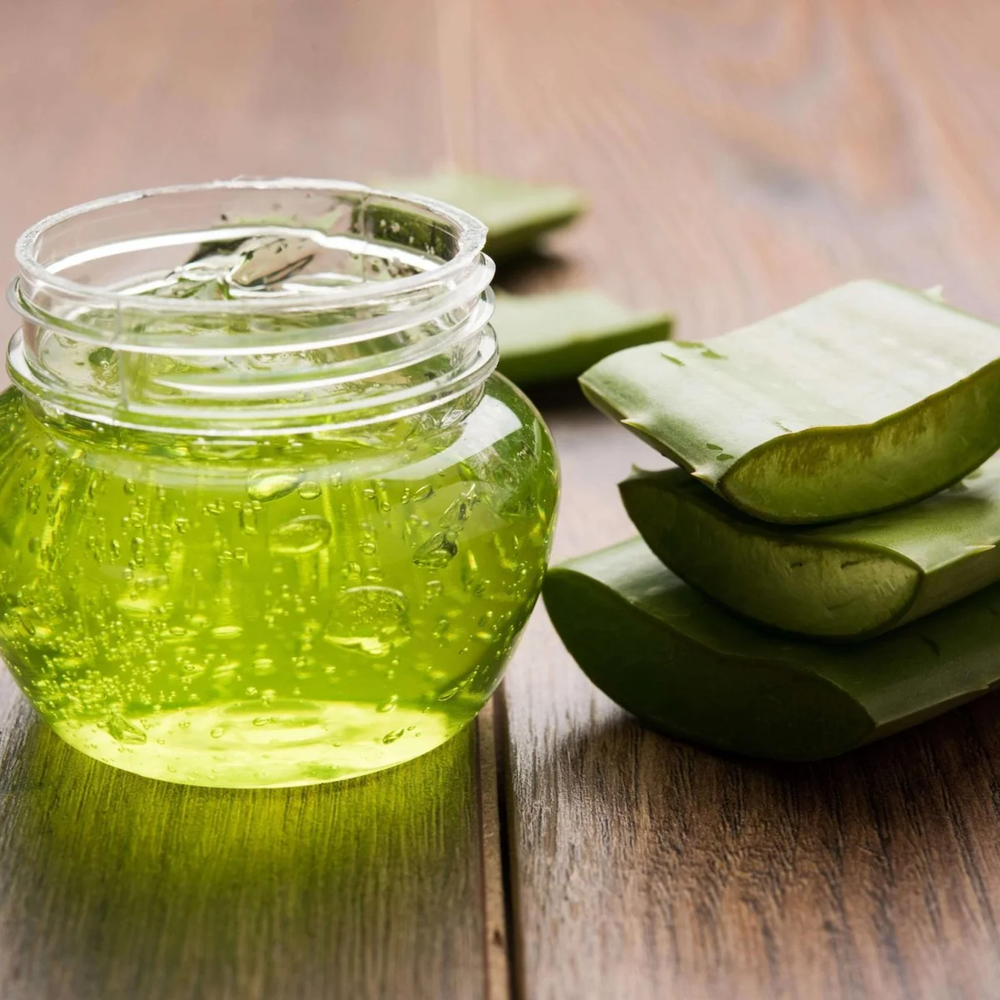
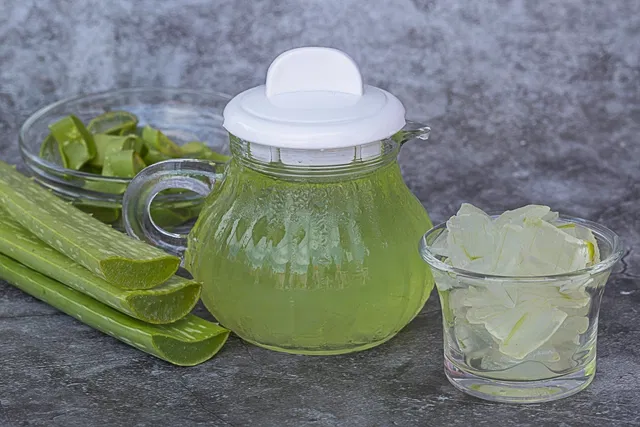
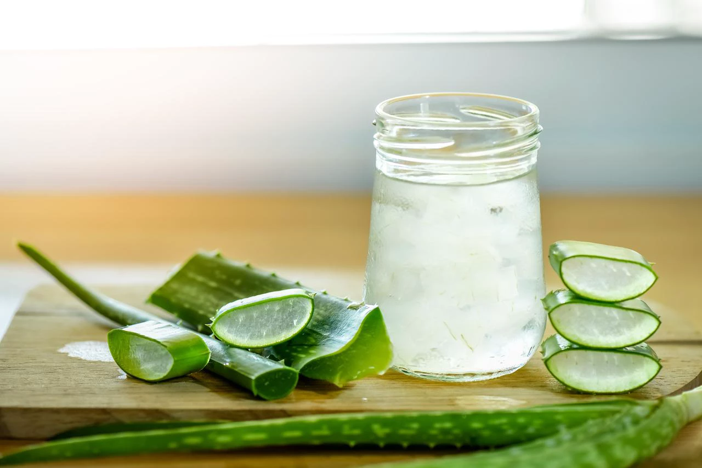

Gel Puro
O gel extraído diretamente das folhas da babosa pode ser aplicado diretamente sobre a pele para tratar queimaduras leves, picadas de insetos, irritações e inflamações.

Suco
O suco de babosa pode ser ingerido para auxiliar no tratamento de problemas digestivos, como úlceras e gastrite. No entanto, é importante consumir o suco de babosa com moderação e preferencialmente diluído em água.

Creme e Loçõe
Muitos produtos cosméticos, como cremes hidratantes, loções para o corpo e produtos para cabelos, contêm extrato de babosa em sua formulação.
Conulte um profissional : Antes de utilizar qualquer planta medicinal, é fundamental consultar um médico ou um profissional da área de fitoterapia. A automedicação pode trazer riscos à saúde.
PRECAUÇÕES : A antraquinona presente na resina da babosa, em exposição às células pode causar mutação, ser potencialmente tóxico, assim não possuem efeitos somente imediatos e facilmente correlacionados com sua ingestão, mas também efeitos que se instalam em longo prazo e muitas vezes não produzem os sintomas característicos, podendo levar a um quadro clínico severo, algumas vezes fatal. O uso interno diário de preparações que contenham antraquinonas, por períodos prolongados, pode provocar dores abdominais, cólicas, diarreias sanguinolentas, hemorragia gástrica e nefrite. Pode provocar baixa concentração de potássio no sangue, diminuir a sensibilidade do intestino, e provocar hemorroidas. Na gestação pode provocar contrações uterinas, e na amamentação causar cólica e diarreia na criança. Em crianças pode causar grave crise de nefrite aguda, provocando intensa retenção de água no corpo.